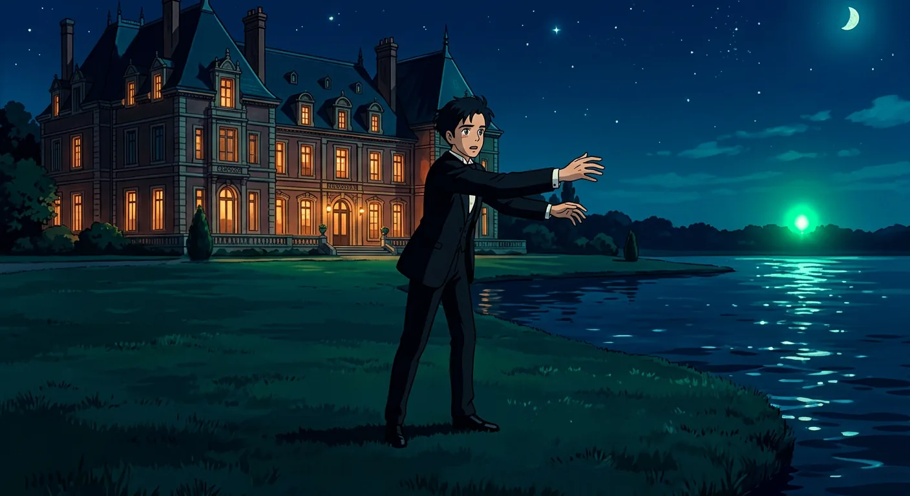
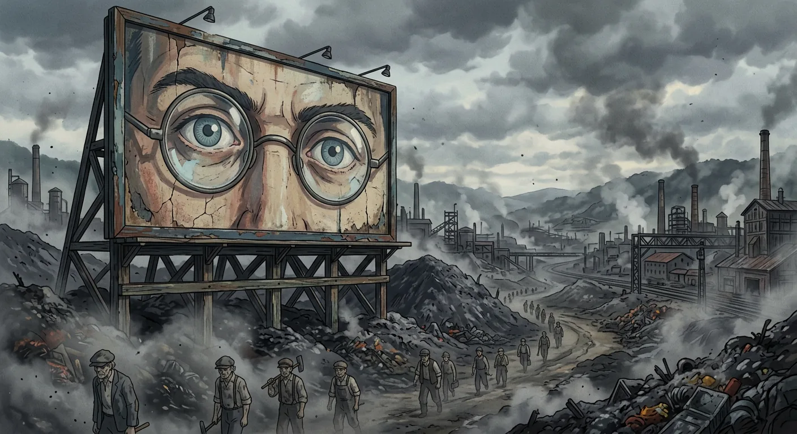
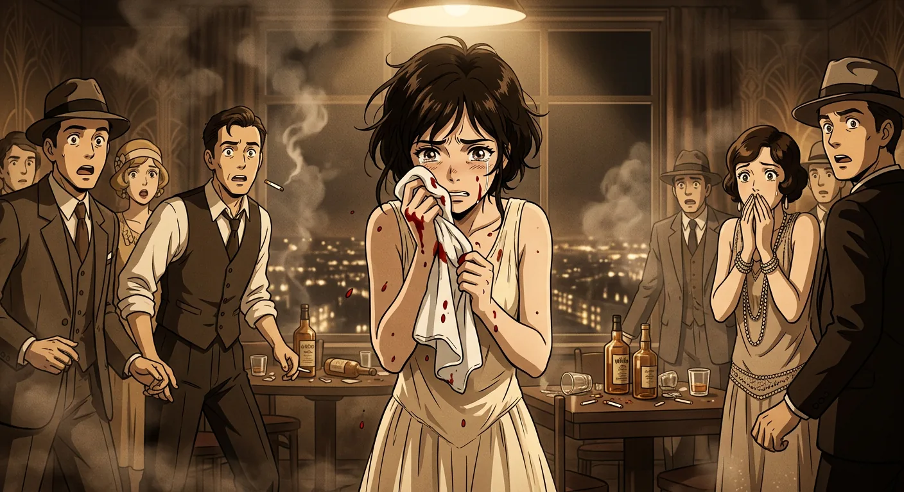
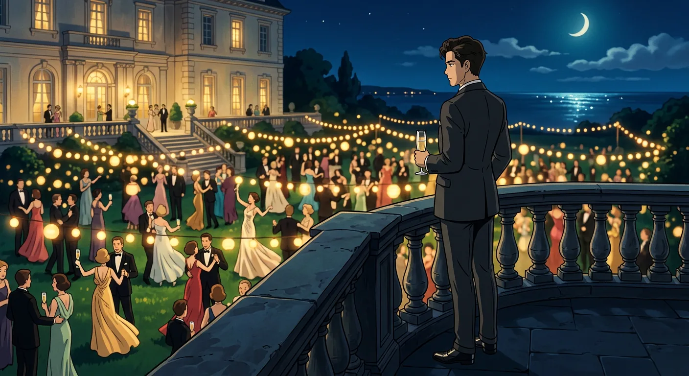
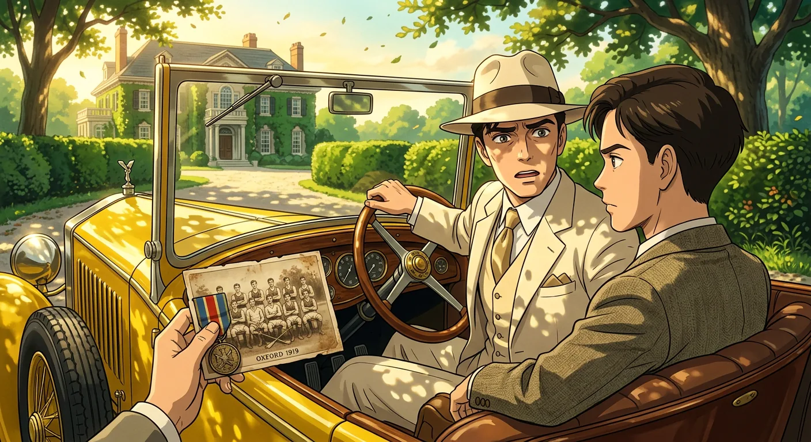
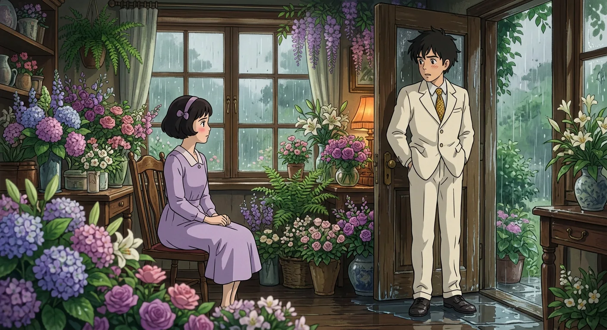
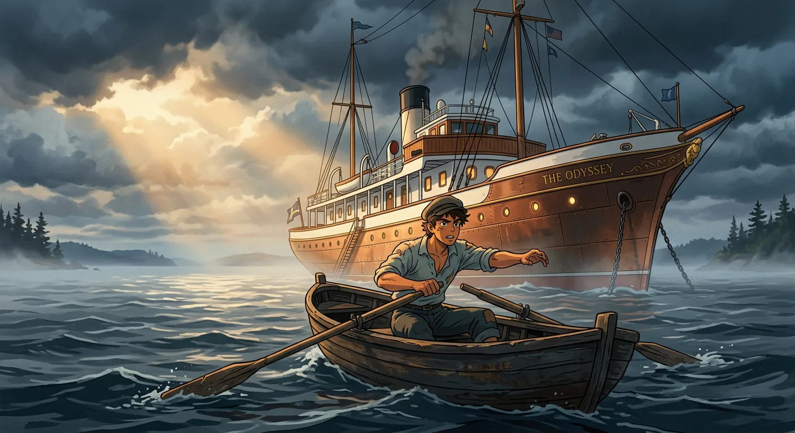
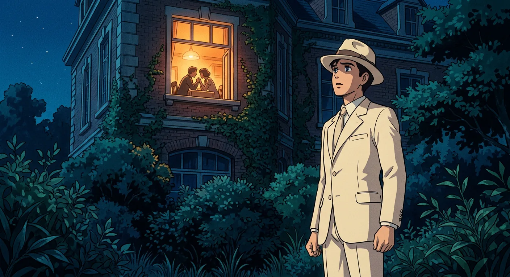
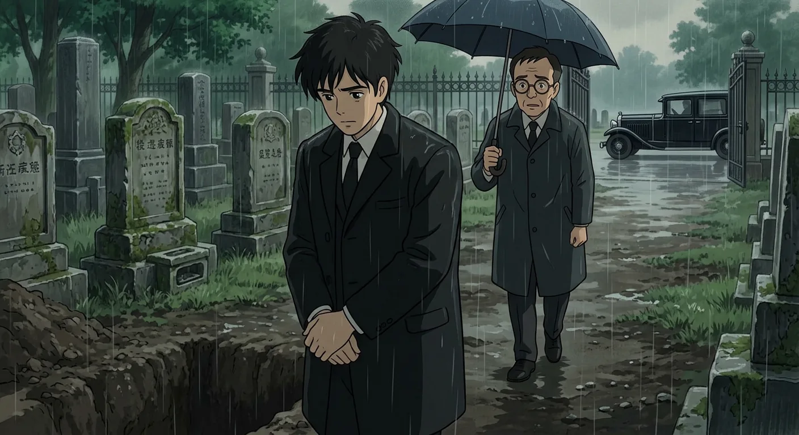
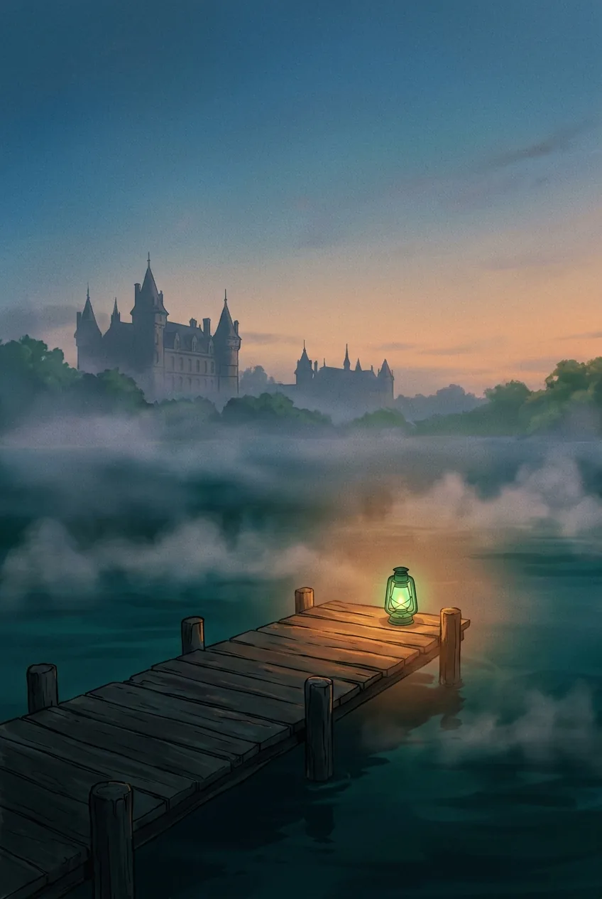

A Stranger Arrives in West Egg
In the spring of 1922, a young man named Nick Carraway came East from the Middle West, carrying with him his father's measured advice about reserving judgment—a counsel born of the recognition that not everyone has had the same advantages in life. This habit of withholding condemnation had made Nick something of a confidant to troubled souls, though it had also subjected him to the unburdening of bores, and he confesses now, looking back after the summer's events had closed, that his tolerance found its limit. He returned from the East wanting the world locked in moral attention forever, wanting no more glimpses into the riotous depths of the human heart. Only one figure remained exempt from this exhausted disillusionment—a man named Gatsby, whose extraordinary gift for hope, whose romantic readiness for life's promises, set him apart from the foul dust that eventually floated in the wake of his dreams.
Nick settled in West Egg, the less fashionable of two egg-shaped peninsulas jutting into Long Island Sound, renting a small weather-beaten bungalow wedged between the mansions of millionaires. His nearest neighbor inhabited a colossal imitation of a Norman château, complete with marble swimming pool and forty acres of lawn—this was Gatsby's place, though Nick had not yet met the man. Across the bay glittered the white palaces of East Egg, and it was there, on a warm windy evening, that Nick drove to dine with his distant cousin Daisy and her husband Tom Buchanan.
Tom had been a formidable presence at Yale, a national figure in football whose subsequent life savored of anticlimax, and now his enormous wealth expressed itself in polo ponies and restless discontent. His body remained cruel and powerful, his manner touched with paternal contempt. Their Georgian mansion overlooked the bay, its lawn seeming to leap and run toward the water, and inside Nick found Daisy and her friend Jordan Baker buoyed upon a couch like figures on an anchored balloon, their white dresses rippling in the breeze until Tom shut the windows and the caught wind died.
Daisy possessed a thrilling, singing voice that promised gay and exciting things forever hovering just out of reach, though beneath her charm lay something hollow and performing. During dinner, Tom expounded crudely on racist pseudoscience while the telephone rang with increasing urgency from inside the house. Jordan Baker—a slender, athletic young woman whose face Nick recognized from sporting photographs—revealed the evening's unspoken tension: Tom kept a woman in New York, and she apparently lacked the decency not to telephone during dinner.
Later, on the darkened porch, Daisy confessed to Nick her cynicism about everything, recounting how she had hoped her daughter would grow up to be a beautiful little fool—the best thing a girl could be in such a world. Yet even as her voice broke with apparent emotion, Nick sensed the basic insincerity beneath it, as though the whole evening had been staged to extract some feeling from him. He left confused and a little disgusted, troubled that Daisy showed no intention of fleeing her unhappy situation.
Arriving home in the loud bright night, Nick noticed a figure emerge from the shadow of Gatsby's mansion—a man standing with hands in pockets, regarding the stars. Nick nearly called out to introduce himself, but something in Gatsby's manner suggested he wished to be alone. Then the mysterious neighbor stretched his arms toward the dark water, trembling, and Nick glanced across the bay to see what held his gaze: nothing but a single green light, minute and far away, burning at the end of some dock.
When Nick looked again, Gatsby had vanished into the unquiet darkness, leaving only questions that the summer would soon begin to answer.

The Valley of Ashes and Its Secrets
Somewhere between West Egg and New York, the motor road and railroad conspire briefly to skirt a desolate stretch of land—a valley of ashes, where the refuse of the city accumulates in grey ridges and grotesque hillocks, where even the men who labor there seem fashioned from the same powdery substance, crumbling as they move through air thick with industrial decay. Brooding over this wasteland, the faded eyes of Doctor T. J. Eckleburg gaze out from an enormous billboard—blue, gigantic, bespectacled, and utterly devoid of the face they ought to belong to. Some forgotten oculist erected this advertisement years ago and then vanished, leaving those painted eyes to keep their vigil over the solemn dumping ground like the eyes of a blind god surveying a kingdom of dust.
It was this blighted geography, with its requisite halt for passing barges, that occasioned my first meeting with Tom Buchanan's mistress—a woman whose existence was insisted upon wherever Tom was known, whose presence at popular restaurants his acquaintances resented even as they noted it with that peculiar fascination the wealthy reserve for open scandal. I had been curious about her in the abstract way one is curious about other people's indiscretions, but I had no particular desire to make her acquaintance until Tom, tanked up from luncheon and possessed by that violent determination characteristic of his physical approach to the world, literally forced me from the train at the ash-heaps.
The garage of George B. Wilson materialized from the grey waste—unprosperous, bare, containing only the dust-covered wreck of a Ford crouching in shadow. Wilson himself proved a spiritless, anaemic man, blond and faintly handsome, who greeted us with a damp gleam of hope in his pale eyes. But it was his wife Myrtle who commanded attention when she descended the stairs—thickish, faintly stout, yet carrying her flesh with a smouldering sensuality that contradicted her plain features. She walked through her husband as if he were a ghost, shook Tom's hand while looking him flush in the eye, and within moments had arranged to meet us at the train station, leaving Wilson to his cement-colored obscurity.
We three rode into New York together, though Mrs. Wilson observed the proprieties by sitting in a separate car. In the city she transformed herself through small purchases—a gossip magazine, cold cream, perfume—and insisted upon acquiring a puppy of dubious pedigree from an old man bearing an absurd resemblance to John D. Rockefeller. The dog, declared an Airedale by its seller though Tom pronounced it a bitch, settled into her lap as we drove toward the apartment Tom kept for these occasions.
The flat on 158th Street proved small and overcrowded with tapestried furniture too large for its rooms, every surface cluttered with scandal magazines and the accumulated props of aspiration. That afternoon dissolved into whisky and haze—I have been drunk just twice in my life, and this was the second occasion—as Mrs. Wilson telephoned her sister Catherine and summoned neighbors named McKee, and the summer sun filled the cramped rooms with cheerful light that seemed to belong to some other, more innocent gathering.
What followed in those increasingly blurred hours would reveal still more about the careless brutality of Tom Buchanan and the desperate yearnings of those who orbit the wealthy, drawn like grey moths toward a flame that will ultimately consume them.

Whispers and Pretensions in the City
The afternoon unraveled into evening in that cramped apartment above the ash heaps, and I found myself drawn unwillingly deeper into a world I had no business inhabiting. What had begun as an impromptu excursion with Tom now swelled into a grotesque little party, the rooms filling with characters who seemed to have materialized from the very smoke that hung perpetually in the air.
Catherine arrived first—Myrtle's sister, a worldly creature of about thirty whose appearance bore the unmistakable marks of careful artifice. Her red hair sat in a solid, sticky bob, her complexion powdered to a milky pallor, and her eyebrows, having been plucked into oblivion, were redrawn at angles that nature had never intended. She moved through the space with proprietary ease, her pottery bracelets clicking an incessant percussion against her wrists. The McKees followed from the flat below: he a pale, feminine photographer still wearing a spot of lather on his cheek like some badge of domestic haste; she shrill and languid and horrible all at once, proud to inform me that Chester had photographed her one hundred and twenty-seven times since their marriage.
But it was Myrtle herself who commanded attention as the whisky flowed and the smoke thickened. She had changed into an elaborate cream-colored chiffon that rustled with every movement, and with that change of costume came an alarming transformation of manner. The vital, earthy woman from the garage had been replaced by something approaching grotesque hauteur. Her laughter grew more affected, her gestures more violent, until she seemed to expand while the room contracted around her, revolving on some noisy, creaking pivot through the haze.
The conversation meandered through trivialities—foot doctors who overcharged, dresses that were "just crazy old things," Mr. McKee's artistic ambitions on Long Island. Yet beneath this surface chatter ran darker currents. Catherine leaned close to whisper that neither Tom nor Myrtle could stand their respective spouses, that they would marry as soon as circumstances allowed. Tom's wife, she confided, was Catholic and would not grant a divorce. I knew this to be an elaborate lie—Daisy was no Catholic—and the deliberateness of the deception unsettled me more than I cared to admit. Here was a mythology being constructed to justify what could not be justified.
The hours blurred together. A second bottle of whisky entered constant circulation. Myrtle breathed into my ear the story of her first meeting with Tom on a train, how his dress suit and patent leather shoes had mesmerized her, how his white shirtfront had pressed against her arm. "You can't live forever," she had thought, and in that desperate refrain I heard the entire philosophy that governed these proceedings.
I wanted to leave, to walk eastward through the soft twilight toward the park, but some invisible force held me captive. Looking out at our line of yellow windows high above the city, I imagined how we must appear to a casual watcher below—just another cluster of mysterious lives contributing our share of human secrecy to the darkening streets. I was within and without, simultaneously enchanted and repelled by life's inexhaustible variety.
Then, toward midnight, the evening's brittle gaiety shattered completely. Myrtle, emboldened by drink, began chanting Daisy's name—that forbidden syllable—in defiance of Tom's darkening expression. "Daisy! Daisy! Daisy!" she shouted. What followed was swift and brutal: Tom's open hand breaking her nose with a short, deft movement. The chaos that erupted—bloody towels on the bathroom floor, women's voices scolding, that long broken wail of pain—seemed somehow inevitable, the only possible conclusion to an evening built on such unstable foundations.
I retrieved my hat from the chandelier where it had somehow landed and followed Mr. McKee into the groaning elevator, into fragmented scenes I would only half-remember: his portfolio of photographs, the cold lower level of Pennsylvania Station at dawn.
The violence I had witnessed would not leave me easily, and in the days that followed, I found my thoughts returning again and again to those mysterious lights across the water from my own small house—to my neighbor Gatsby, about whom Catherine had whispered such strange rumors, and whose parties seemed to promise something altogether different from the sordid spectacle I had just survived.

Gatsby's Mysterious Past Revealed
Through the shimmering veil of summer nights, I observed from my modest cottage the magnificent theater of excess that was Gatsby's estate. His blue gardens transformed into something almost mythological—men and women drifting like moths through champagne mist and starlight, his motorboats slicing the Sound into cataracts of white foam, his Rolls-Royce shuttling parties with the regularity of public transport. The machinery of his hospitality was awesome in its precision: pyramids of pulpless oranges testifying to Friday's crates, armies of caterers draping canvas and colored lights until the grounds resembled nothing so much as a Christmas tree for giants, bars stocked with cordials so ancient they predated his female guests' memories entirely.
I had been actually invited—a distinction I came to understand was exceedingly rare. Most guests simply materialized, borne by automobiles and rumors toward that glowing shore, conducting themselves with the cheerful abandon of visitors to an amusement park. Some departed without having glimpsed their host at all. But a chauffeur in robin's-egg blue had crossed my lawn bearing a surprisingly formal invitation signed in a majestic hand: Jay Gatsby.
I arrived in white flannels and found myself adrift among swirls of strangers, young Englishmen selling something with hungry eyes, cocktail trays floating through twilight like promises. My search for Gatsby proved futile and faintly embarrassing until Jordan Baker appeared on the marble steps, and I attached myself to her with grateful relief. We descended into the party's depths together, settling at tables where the conversation turned inevitably toward our mysterious host. The whispers were delicious and contradictory—he had killed a man, he had been a German spy, he had served in the American army. The romantic speculation he inspired seemed testimony enough to his peculiar power.
In the Gothic library we encountered a drunken philosopher with owl-like spectacles, marveling that Gatsby's books were real—"pages and everything"—comparing him to Belasco for the thoroughness of his stagecraft. The discovery seemed to confirm something essential about this world: the elaborate care taken to construct surfaces, the possibility that everything might yet be cardboard.
I met Gatsby himself quite by accident, conversing with a pleasant man about the war, accepting his invitation to try a hydroplane, before the revelation came: "I'm Gatsby." His smile possessed a quality of eternal reassurance, the kind you encounter perhaps five times in a life—it understood you precisely as far as you wished to be understood, believed in you as you longed to believe in yourself. Then it vanished, and I was looking at an elegant young roughneck whose formal speech just missed absurdity, a man choosing his words with evident care. When Jordan was summoned for a mysterious private conference and emerged an hour later with something "simply amazing" she refused to share, I felt the first stirrings of genuine curiosity about this figure who stood apart from his own festivities, sober and watchful, while French bobs touched other shoulders and no one swooned backward into his arms.
The evening's final image crystallized in chaos: a wheel-shorn coupé in the ditch, Owl Eyes disclaiming all knowledge of mechanics, a drunken driver unaware they had stopped, the wafer moon surviving above Gatsby's glowing garden while emptiness flowed from the windows and the host stood in formal farewell, isolated against the night.
In truth, that summer held more than parties—my days of honest labor downtown, brief romantic entanglements that dissolved like morning mist, and the gradual discovery that Jordan Baker, golf champion and careful avoider of shrewd men, was incurably dishonest, the kind of careless driver who depended on others to keep out of her way. And yet, as one who suspects himself of at least one cardinal virtue, I recognized that before anything could begin with Jordan, something else—someone else, back home—had to end, and it was this tangle of obligations that occupied my thoughts when Jordan's party called again, summoning me toward whatever amazing revelation Gatsby had shared with her in that Gothic library.

The Reunion of Gatsby and Daisy
On Sunday mornings, while church bells tolled their solemn hymns across the villages, the glittering world descended upon Gatsby's estate to twinkle irreverently on his lawn. The young ladies drifted between cocktails and roses, spinning fantastic rumors—that he was a bootlegger, a murderer, perhaps even kin to the devil himself—all while accepting his hospitality with the peculiar tribute of knowing nothing whatever about their host.
I once recorded the names of his guests upon an old timetable, now yellowed and disintegrating at its folds, dated July 5th, 1922. From East Egg came the Hornbeams and Willie Voltaires, the whole Blackbuck clan who gathered like goats in corners, Edgar Beaver whose hair turned cotton-white one winter afternoon for reasons no one could explain. From West Egg arrived movie people and gamblers, men connected to films and fluctuating stocks, including one Klipspringer who appeared so frequently he became known simply as "the boarder." They arrived from everywhere—theatrical folk, divorcees, a prince we called Duke whose real name I never knew—all accepting Gatsby's starlight as their due.
Then came that disconcerting ride into the city, Gatsby's cream-colored car lurching up my drive with its three-noted horn. He had seemed, in our previous conversations, disappointingly hollow—merely the proprietor of an elaborate roadhouse. But that morning, balancing on his dashboard with that peculiarly American restlessness, he began unspooling a biography so ornate I could scarcely contain my incredulous laughter. A wealthy orphan from San Francisco (which he called the Middle West), educated at Oxford, a young rajah collecting rubies across European capitals, then a decorated war hero—even Montenegro had honored him. The phrases were worn threadbare, evoking only a turbaned character leaking sawdust. Yet when he produced the medal, the photograph from Trinity Quad, the thing had an authentic look, and suddenly I saw tiger skins flaming in his palace on the Grand Canal.
At a cellar restaurant on Forty-second Street, Gatsby introduced me to Meyer Wolfshiem—small, flat-nosed, with human molars for cuff buttons and memories of men shot dead outside the old Metropole. When Gatsby revealed that Wolfshiem had fixed the 1919 World's Series, I felt staggered by the casual enormity of it, the single-mindedness of playing with fifty million people's faith.
But it was Jordan Baker, that afternoon at the Plaza, who finally delivered Gatsby from his purposeless splendor. In 1917, she told me, Daisy Fay of Louisville—dressed in white, driving a white roadster, the most popular girl in town—had sat with a young lieutenant named Jay Gatsby, and he had looked at her in a way every young girl wants to be looked at. Then came the war, then Tom Buchanan with his private cars and three-hundred-and-fifty-thousand-dollar pearls, and the night before the wedding when Jordan found Daisy drunk and clutching a letter, trying to give back the pearls, crying until they poured ice water over her and hooked her back into her dress.
Gatsby had bought his mansion, Jordan explained, simply because Daisy lived just across the bay. He had dispensed starlight to casual moths for five years, hoping she might wander in. Now he wanted only to come over some afternoon to my little house next door, where he might see her again—a request so modest in its phrasing, so immense in its longing, that it shook me to understand it.
As darkness fell over Central Park and children's voices rose like crickets through the twilight, I drew Jordan closer, suddenly aware that I too had become one of the pursuing, caught up in that ancient current that would soon pull us all toward its inevitable shore.

The Reunion of Gatsby and Daisy
The night I returned to West Egg, Gatsby's mansion blazed with such ferocious illumination that for one bewildering instant I mistook the whole peninsula for a conflagration. Yet no revelry stirred within those luminous walls—only the restless proprietor himself, wandering through empty rooms, waiting for word of what I might arrange. When I told him I would telephone Daisy, his studied nonchalance fooled no one; he deflected with elaborate casualness, inquiring about the state of my grass, offering dubious business propositions through Wolfshiem's network, all while that suppressed eagerness trembled beneath every word. I cut him off before the offer could become a debt I'd carry between us, and he retreated unwillingly into his blazing house while I fell into a sleep too deep to wonder how many hours he spent glancing into rooms.
The appointed afternoon arrived waterlogged and grey. By then Gatsby's preparations had achieved a kind of comic grandeur—a man dispatched in the pouring rain to shave my ragged lawn, a greenhouse's worth of flowers overwhelming my modest cottage, and finally Gatsby himself, pale and sleepless in white flannel and gold tie, his nerves wound so tight he could neither see the grass he'd obsessed over nor sit still long enough to pretend calm. He started at every sound, stared blindly at economic texts, and threatened to abandon the entire enterprise minutes before Daisy's motor turned into my lane.
What followed bore all the hallmarks of exquisite disaster. Gatsby vanished the moment Daisy stepped inside, only to reappear at the front door—standing rigid in a puddle, pale as death, hands plunged like weights in his pockets—and stalk past me with the mechanical precision of a man on a wire. The initial reunion proved almost unbearably awkward: Gatsby reclining against the mantelpiece in fraudulent ease, his head tilted so far back it dislodged a defunct clock; Daisy perched frightened yet graceful on a stiff chair; and between them, five years of silence broken only by stilted pleasantries. When I escaped to the kitchen, Gatsby followed, whispering that the whole affair was a terrible mistake. I told him he was acting like a child and sent him back.
For half an hour I sheltered beneath a knotted tree while rain drummed against the leaves and Gatsby's enormous house loomed before me—that monument to romantic ambition, built by a brewer whose dreams of founding a dynasty collapsed when his neighbors refused to play peasants to his lord. When the sun broke through at last, I returned to find the living room transformed. They sat at either end of the couch, all embarrassment dissolved, looking at each other as though some essential question had finally been answered. Daisy's face glistened with tears, and Gatsby glowed with a radiance that filled the little room without word or gesture.
We crossed to his mansion then, and Daisy wandered enchanted through music-rooms and Restoration salons, past period bedrooms swathed in rose silk and bathrooms with sunken baths, until we reached Gatsby's private chambers. There he flung shirts before us—sheaves of linen and silk in coral and apple-green and lavender—and Daisy wept into their soft folds, overcome by beauty she could not quite name. Later, standing at his window while fresh rain dimpled the Sound, Gatsby pointed toward the green light burning at the end of her dock, and I understood that its colossal significance had already begun to fade; the enchanted object had become merely a light again now that the dream stood beside him in the flesh.
Yet even as Klipspringer played sentimental songs in the music-room and excitement crackled through the rainy dusk, I caught bewilderment flickering across Gatsby's face—the first faint suspicion that Daisy, however radiant, could never match the illusion he had constructed over five long years, an illusion fed by creative passion and decked with every bright feather that drifted his way. Still, when she murmured something low in his ear, he turned toward her with a rush of emotion, held by that fluctuating, feverish voice that could never be over-dreamed. I left them there together, possessed by intense life, and descended the marble steps alone into the rain—aware, perhaps before either of them, that what had been won in that luminous afternoon might already contain the seeds of its own unraveling.

The Invention of Jay Gatsby
It was around this time that Gatsby's mounting fame brought an ambitious young reporter to his door—a man operating on instinct and rumor, though his instinct proved shrewder than he knew. For Gatsby had become that curious thing: a figure perpetually on the verge of being news, his name circulating through offices and drawing rooms alike, accumulating legends as a ship's hull accumulates barnacles. Tales of underground pipelines to Canada clung to him, and there persisted one particularly fanciful notion that he lived not in a house at all but aboard some nautical phantom that drifted secretly along the Long Island shore. Why such inventions should have satisfied James Gatz of North Dakota is difficult to say.
James Gatz—that was the name, or at least the legal name. He had shed it at seventeen, at the precise moment when destiny materialized in the form of Dan Cody's yacht dropping anchor over the treacherous flats of Lake Superior. The boy who borrowed a rowboat to warn the millionaire of dangerous winds was already somebody else entirely—Jay Gatsby, sprung from his own Platonic conception of himself, a son of God who must be about His Father's business in service of a vast, vulgar, and meretricious beauty. His shiftless farm parents had never been real to him; his imagination had simply declined to accept them. And so he invented the sort of Jay Gatsby a seventeen-year-old boy would invent and remained faithful to that invention until the end.
Before Cody, there had been the hardscrabble existence of a clam-digger and salmon-fisher along Superior's south shore, the brown body hardening through half-fierce, half-lazy labor. There had been women who spoiled him into contempt, and nights when the most grotesque and fantastic conceits haunted his bed while moonlight soaked his tangled clothes on the floor. A universe of ineffable gaudiness spun itself out in his brain—reveries that hinted at the unreality of reality, promising that the rock of the world was founded securely on a fairy's wing. A brief, disastrous attempt at St. Olaf's College had ended in two weeks, the institution's ferocious indifference to the drums of his destiny proving intolerable.
Then came Cody—fifty years old, a product of Nevada silver and Yukon gold, physically robust but mentally softening, his fortune besieged by scheming women. For five years Gatsby served him in every capacity from steward to jailor, circling the continent three times, learning to let liquor alone while watching what drink did to other men. When Cody died inhospitably in Boston, the legacy of twenty-five thousand dollars vanished into Ella Kaye's hands through some legal device Gatsby never understood. What remained was his singularly appropriate education; the vague contour of Jay Gatsby had filled out to the substantiality of a man.
I have set down this history to explode the wild rumors about Gatsby's antecedents—rumors that weren't even faintly true. During a pause in my association with his affairs, Tom Buchanan appeared unexpectedly at Gatsby's house with a riding party, and the awkward encounter that followed—Tom's gruff dismissal, the lady's insincere invitation, the group's hasty departure before Gatsby could fetch his car—revealed the vast social gulf that no amount of money could bridge. The following Saturday, Tom brought Daisy to one of Gatsby's parties, and I watched her see West Egg through eyes that found it appalling in its raw vigor and obtrusive fate. Later, alone with Gatsby among the crushed flowers and discarded favors, I heard him insist that the past could be repeated, that everything could be fixed just as it was before—and I glimpsed the impossible thing he sought: not merely Daisy herself, but some idea of himself that had gone into loving her, recoverable only if he could return to a certain starting place and begin again. But even as I listened, something elusive—a fragment of lost words, an uncommunicable rhythm—stirred in my memory and died unspoken, leaving only the sense that what Gatsby reached for was already receding before him, borne back ceaselessly into the irretrievable past.

The Hottest Day's Simmering Tensions
It was precisely when curiosity about Gatsby had reached its fevered peak that the lights of his mansion failed to illuminate the Saturday darkness—and so, as mysteriously as it had begun, his reign as Trimalchio drew to its close. The servants were dismissed, replaced by rough associates of Wolfshiem's, all because Daisy had taken to visiting in the afternoons, and the whole glittering caravansary collapsed like a house of cards beneath the weight of her disapproval.
The invitation to lunch at the Buchanans' arrived through Gatsby himself, though Daisy telephoned shortly after with an urgency that suggested something momentous brewing beneath the surface. The day that followed proved to be the most broiling of the summer, the kind of heat that confuses the senses and loosens whatever restraints civilization imposes upon its inhabitants. In the darkened parlor, Daisy and Jordan lay like silver idols upon an enormous couch while Tom conducted suspicious business on the telephone—his mistress calling, Jordan whispered, though he denied it.
When Daisy kissed Gatsby openly and murmured her love, when she told him he always looked so cool, Tom Buchanan witnessed what he had perhaps long suspected but never believed. Something fundamental shifted in that sweltering room. His mouth opened in astonishment as he recognized his wife as someone he had known a long time ago, now revealed as a stranger.
The expedition to town that followed was born of Daisy's restless desperation, though no one truly wanted it. At Wilson's garage, they stopped for gasoline, and I observed two men brought low by parallel discoveries—Wilson, pale and sick with the knowledge that his wife possessed some secret life apart from him, and Tom, newly awakened to the precariousness of his own domestic arrangements. Above the garage, Myrtle Wilson peered down at the yellow car with eyes wide with jealous terror, mistaking Jordan for Tom's wife.
In the stifling parlor of the Plaza Hotel, with Mendelssohn's Wedding March drifting up from some ceremony below, the confrontation finally erupted. Tom attacked Gatsby's credentials, his Oxford claims, his very identity as "Mr. Nobody from Nowhere." When Gatsby revealed the truth—that Daisy had never loved Tom, that she loved only him—the dream that had sustained him for five years hung trembling in the balance. But Daisy could not deliver what Gatsby demanded. She admitted she had loved Tom once, that she could not erase the past entirely, and with each reluctant confession, Gatsby watched his carefully constructed vision crumble. Tom exposed the drugstores, the bootlegging, the association with Wolfshiem, and Daisy withdrew further into herself until whatever courage she possessed had utterly vanished.
They departed—Daisy and Gatsby in his yellow car, the rest of us following behind. It was my thirtieth birthday, I realized, the portentous beginning of a new decade stretching before me like a menacing road. We drove on toward death through the cooling twilight, though we did not yet know it.
The death car emerged from the gathering darkness and struck Myrtle Wilson as she rushed into the road, extinguishing in an instant all that tremendous vitality she had stored so long. At the garage, Wilson swayed in his doorway, calling out his grief in high, horrible cries while Tom bent over the body of his mistress, wrapped in blankets against the hot night.
Later, I found Gatsby standing in the shrubbery outside the Buchanans' house, keeping vigil. Daisy had been driving, he confessed, but he would take the blame. Through the pantry window, I glimpsed Tom and Daisy sitting together over untouched chicken and ale, their hands touching, conspiring in that unmistakable intimacy of long marriage. And there I left Gatsby in the moonlight—watching over nothing, still believing in a dream that had already died in the stifling heat of that Plaza afternoon.
The Long Secret Finally Revealed
That final night I could not sleep—a foghorn moaning across the Sound, my own mind swinging between waking horror and nightmare, until at last I heard a taxi climbing Gatsby's drive and knew I had to go to him. I found him leaning against a hall table, hollowed out with waiting, with watching Daisy's window until four in the morning when she had appeared briefly, extinguished her light, and left him with nothing.
We wandered his vast house hunting cigarettes, pushing through curtains like pavilions, stumbling over ghostly piano keys in the dark. Dust lay everywhere, the rooms musty and unaired, and when at last we found two stale cigarettes in a humidor, we sat by the open French windows smoking into the darkness. I urged him to leave—Atlantic City, Montreal, anywhere—but he would not abandon his vigil until Daisy declared herself.
It was then, in that gray hour before dawn, that he told me everything. The persona of Jay Gatsby had shattered against Tom's brutal revelations, and with nothing left to protect, he spoke freely of his youth, of Dan Cody, and above all of Daisy. She had been the first "nice" girl he ever knew, her Louisville house a palace of ripe mystery, bedrooms cooler and lovelier than any he had imagined, corridors humming with romances still fresh rather than laid away in lavender. He had come to her door wearing only the invisible cloak of his uniform, a penniless young officer trading on borrowed time, and he had taken her—ravenously, unscrupulously—because he had no right to touch her hand. He meant to leave, yet found he had committed himself instead to the following of a grail. On a cold autumn afternoon before he shipped overseas, they sat together by the fire, her cheek flushed, communicating more profoundly in silence than they ever had in words.
The war scattered them. Gatsby won his majority and distinction at the Argonne, but a misunderstanding stranded him at Oxford while Daisy, moving again through a twilight universe of saxophones and shining slippers, let her life be shaped by a force close at hand. Tom Buchanan arrived in the middle of spring, wholesome and bulky, and the letter announcing her engagement reached Gatsby across the ocean. He returned to Louisville on his last army pay, walking streets haunted by her footsteps, and when the day-coach bore him away he stretched out his hand as if to snatch a wisp of air, knowing he had lost the freshest and best part of it forever.
By morning light we opened every window, and Gatsby, gazing at the grey-turning, gold-turning world, still insisted Daisy had never loved Tom—or if she had, it was "just personal," a phrase I could not fathom except as proof of some intensity beyond ordinary measure. I missed train after train, reluctant to leave him, and when at last I turned at the hedge I shouted back the only compliment I ever gave him: "They're a rotten crowd. You're worth the whole damn bunch put together." His radiant smile broke across his face as if we had shared that secret all along.
In the city I dozed at my desk until Jordan's call woke me—her voice harsh now, our conversation collapsing into silence—and when I tried to reach Gatsby the line was held open for Detroit. Meanwhile, across the ash-heaps, George Wilson had spent the night rocking and muttering, the dog-leash hidden in Myrtle's drawer proof enough of betrayal, the enormous eyes of Doctor Eckleburg staring down like the eyes of God. By noon he had traced the yellow car to West Egg and learned Gatsby's name.
That afternoon Gatsby went down to his pool at last, carrying a pneumatic mattress, leaving instructions for any telephone call to be brought to him. No call ever came. The butler waited until there was no one left to receive it, and in the faint drift of the water, among leaves tracing a thin red circle on the surface, the holocaust was made complete—Gatsby floating on his laden mattress, Wilson's body crumpled in the grass nearby, and the dream, at last, extinguished.
Now there remained only the gathering of the wreckage, and no one, it seemed, willing to claim it.

The Loneliness of the Aftermath
After two years the particulars have blurred, yet certain images remain fixed in memory with the permanence of grief: the endless procession of police and photographers streaming through Gatsby's front door, the curious little boys clustering open-mouthed about the pool, a detective's careless pronouncement of "madman" that would set the tone for every grotesque newspaper headline to follow. Catherine, Myrtle's sister, surprised me with her determined silence at the inquest—she swore her sister had never seen Gatsby, had been perfectly happy with Wilson, and so the whole sordid business was reduced to its simplest form: a man deranged by grief, a senseless act. The case rested there, sealed in convenient lies.
But all that official machinery seemed remote and unessential beside the terrible intimacy of what I had inherited. From the moment I telephoned news of the catastrophe, I found myself on Gatsby's side, and utterly alone. Every practical question was referred to me—not because anyone cared, but because no one else did. I called Daisy within the hour; she and Tom had already fled, leaving no address, no word, nothing. I wanted desperately to find someone for him, to go into that room where he lay still and silent and promise him that he would not go through this alone.
Meyer Wolfshiem's name was not in the phone book. His written reply, when it finally came, was a masterwork of evasion—terrible shock, very important business, cannot get mixed up in this thing. The telephone brought only strangers: a panicked voice from Chicago inquiring about bonds, young Parke's arrest, matters from that shadow world Gatsby had inhabited. When I explained that Mr. Gatsby was dead, there was only silence, then the sharp squawk of a severed connection.
On the third day, a telegram arrived from Minnesota. Henry C. Gatz—Gatsby's father—appeared in a long cheap ulster, solemn and dismayed, his eyes leaking continuous tears. He moved through his son's mansion in a kind of bewildered awe, grief mingling with pride at the splendor surrounding him. He showed me a photograph of the house, cracked and dirty from much handling, and a ragged copy of *Hopalong Cassidy* with young Jimmy's boyhood schedule penciled on the flyleaf: rise at six, dumbbell exercises, study electricity, practice elocution. "It just shows you," the old man kept saying. "Jimmy was bound to get ahead."
The funeral was a pitiful affair. Klipspringer called only to ask about his tennis shoes. Those who had drunk Gatsby's champagne by the crate would not come; one implied he had gotten what he deserved. When the Lutheran minister arrived, we waited in vain for cars that never appeared. In the end, our procession to the cemetery numbered three vehicles: the hearse, horribly black in the drizzle; Mr. Gatz and myself in the limousine; and a handful of servants in Gatsby's station wagon. Only Owl-Eyes appeared, splashing through the soggy ground to stand beside the grave. "The poor son-of-a-bitch," he said, and that was Gatsby's eulogy.
Afterward, the East grew haunted for me, distorted beyond correction. I saw Tom once more on Fifth Avenue and learned what I had already guessed—that he had told Wilson the truth about the car, justifying Gatsby's death with lies about what happened that night. They were careless people, Tom and Daisy; they smashed up things and creatures and retreated into their money, leaving others to clean up the mess.
On my last night I returned to Gatsby's empty house, erased an obscene word some boy had scrawled on the white steps, and wandered down to the beach. There, as the moon rose and the inessential houses melted away, I thought of the Dutch sailors who had first glimpsed this fresh green breast of the new world, and of Gatsby's own wonder when he first picked out that green light across the water. He had believed in it so completely—that orgiastic future, always receding, always just beyond reach. And so we beat on, boats against the current, borne back ceaselessly into the past.
